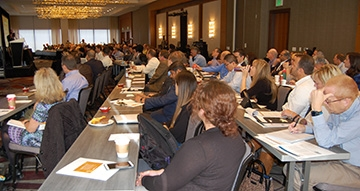
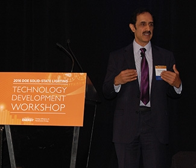
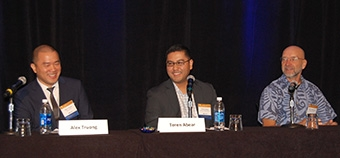
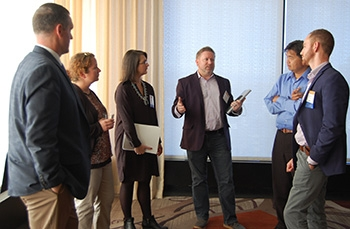
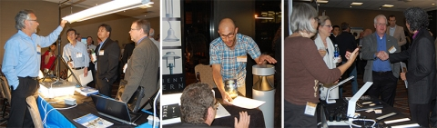
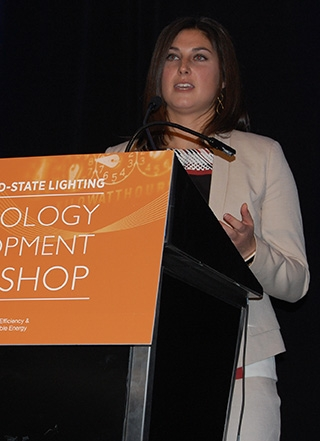
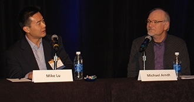
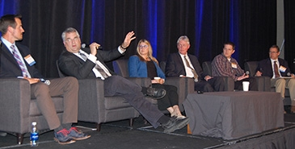

Meeting Presentations and Materials
Nearly 200 lighting leaders from across North America gathered in Denver November 16–17, 2016, for the eleventh annual Solid-State Lighting Technology Development Workshop, hosted by DOE. The diverse audience spanned the spectrum of SSL stakeholders, representing lighting, control, and components companies as well as research institutes, academia, national laboratories, municipalities, designers, specifiers, and distributors. The workshop’s purpose was to create a forum for airing application and performance issues related to the current level of solid-state lighting technology development, and to explore emerging capabilities being enabled by ongoing advances in SSL and controls technology.
Pre-Conference Guided LED Tour
An optional guided LED tour the evening of November 15 provided a lighting designer’s perspective on two local large-scale projects. The first stop, guided by several project team members from RNL Design, was at the Denver offices of international law firm Hogan Lovells, which moved to a new LEED Gold-certified building in August 2016 and features a wide range of LED lighting applications and state-of-the-art technology. Stop two was the Denver Union Station, whose redevelopment was completed in 2014. Focusing on lighting in several areas of the huge complex — including the historic building façade, the Crawford Hotel lobby, and the train platform — Dane Sanders from Clanton & Associates commented on the process of working with multiple stakeholders and different priorities, as well as the evolution of LED lighting technology during the project timeline.
WELCOME
DOE SSL Program Manager James Brodrick provided an introduction to the workshop sessions, inviting attendees to learn, share, and participate. He observed that today’s SSL products can outperform their conventional counterparts on many parameters — not just efficacy and total cost of ownership, but also color quality, light distribution, and new features such as spectral engineering, connectivity, and novel form factors. But Brodrick noted that SSL technology is still in its infancy, and that much development potential remains. That’s why, he said, there’s a great deal of related research that’s either ongoing or in the planning stages, and that aims to fill gaps in our knowledge, so that we can make better decisions about the use of light. “Light isn’t just lighting anymore,” Brodrick stressed.
tAKING FULL ADVANTAGE OF SSL’S POTENTIAL
The workshop’s keynote address was given by Lumileds CTO Jy Bhardwaj, who emphasized the many opportunities that are still on the table and that can help accelerate SSL adoption. Most of those opportunities stem from the technology’s remarkable flexibility in comparison to conventional lighting. For example, Bhardwaj observed, we can cut costs by taking the dome off the LED packages, which reduces the source image size as well as the etendue (the property of light describing the extent to which it spreads out), producing a much more controllable beam — which in turn can more efficiently direct light to intended targets. Further, he said, we can greatly improve the performance of LED auto headlights by pixilating and controlling high-luminance sources, enabling light-beam shaping to avoid causing glare in the eyes of oncoming drivers. Bhardwaj also pointed out that with SSL, we can engineer the spectrum, which opens up a whole new dimension for lighting, one where we can create custom "recipes" for even the most demanding of retail and hospitality applications and minimize certain wavelengths when necessary, in order to reduce the potential for circadian disruption.
WHAT HAVE WE LEARNED ABOUT TLEDS?
A panel on linear LED lamps, or TLEDs, was moderated by Jeff McCullough of Pacific Northwest National Laboratory (PNNL). Citing a recent CALiPER Snapshot report, he observed that in the LED Lighting Facts® database, TLEDs now comprise half of all listed lamps and account for 10% of all listed products (lamps and luminaires), with an average efficacy of 92 lm/W. But their annual efficacy increase of about 10 lm/W over the previous four years slowed to 6 lm/W in 2016.
Offering a manufacturer’s perspective, panelist Alex Truong of MaxLite reviewed the four types of TLEDs: UL Type A, which is ballast-compatible and thus plug-and-play; UL Type B, which has an integrated driver and runs on line voltage that bypasses any existing fluorescent ballast; UL Type C, which has an external driver and runs on line voltage; and a hybrid of UL Types A and B that came on the market about two years ago and is gaining in popularity. He discussed the characteristics, advantages, and disadvantages of each type. Truong predicted that TLEDs will eventually feature built-in sensors, be controlled wirelessly to be compatible with connected lighting, have a built-in battery backup, be DC-powered (via power over ethernet), and be white- or even color-tunable to provide a host of benefits to humans as well as plants.
Teren Abear of Southern California Edison (SCE) provided a utility’s perspective on TLEDs. He noted that in 2008, TLEDs couldn’t compete with fluorescent technology, providing only half the light at half the efficacy — to say nothing of price — but that he started to see major changes in 2013, and today there are thousands of TLED products. Abear said one thing SCE was concerned about with TLEDs was ballast life, so it conducted life testing of a sampling of ballasts. That testing showed very little ballast failure after one year of use. Long-term testing was also begun, but those results aren’t available yet. Abear observed that California’s Title 24 could impact the TLED market. He noted that one of the biggest drivers for switching to TLED UL Type A lamps is that it doesn’t trigger code, which means a customer can just do a quick, low-cost lamp change-out.
Stan Walerczyk of Lighting Wizards confessed that he didn’t like TLEDs in the past, but stated that pricing and “politics” have recently made them a very good solution in many applications. He noted that whereas TLEDs used to cost more than $20 each, a typical price today is $8, with some even lower than that. Walerczyk said that because efficacies have been increasing, there are diminishing returns when converting fluorescent to TLEDs, but that — excluding any remaining “low-hanging fruit” — it’s still possible to save about 60% with a retrofit. Still, he said, electric-bill reductions for retrofits are a fraction of what they once were, and LED troffer kits cost more than the legacy products do. Walerczyk added that LED wattage is now typically so low that pairing SSL with controls is no longer cost-effective in saving energy.
CONNECTED LIGHTING
PNNL’s Michael Poplawski moderated a panel on connected lighting. Noting that LED technology is the catalyst for connected lighting because of its efficacy and its electronic nature, he defined a connected lighting device as one that’s intelligent, interfaces with a network, and works with sensors to detect such things as ambient light, traffic, occupancy, and air quality. The opportunity, Poplawski said, is that enabling intelligent lighting devices with the right type and amount of data can result in reduced energy consumption and improved lighting performance. The threat, he said, is that the collected data may enable other revenue streams that compete with lighting and energy performance.
Matthew Petti of Eaton pointed out that one of the key aspects of networked lighting is centralized management of the lighting. He reviewed the improvements resulting from wireless communication, including easier commissioning and minimal system components. Petti explained that networked lighting can justify the costs by providing such added value as motion sensing and daylighting, occupancy history, energy metering, asset tracking, HVAC integration, and communication with smartphones. He suggested that prospective users start with established manufacturers, determine functional needs, decide between hardwired and wireless and between room-based and luminaire-based sensors, and invest in a control system that can be upgraded or has features that can be utilized in the future.
Matthew DeLoge of Johnson Controls noted that the connectivity market has expanded to now include traditional lighting and building controls companies, networking companies, semiconductors, communications, and software developers. He reviewed the progress made in the areas of compatibility (more flexible hardware designs, with expanded technology options and standards), interoperability (more flexible connectivity options and a higher degree of reliance on software), and interchangeability (expanded options, with a movement toward more open protocols). DeLoge discussed several pilot studies and noted that connectivity not only can reduce costs for energy and maintenance and bring the potential for revenue generation, but can also confer a competitive advantage and improve productivity.
Mahadev Eakambaram of Intel defined the Internet of Things (IoT) as an intelligent way of connecting and orchestrating devices so that they can talk to one another rather than just be connected together. He noted that there are 50 billion devices and 212 billion sensors in the world, but 85% of them are unconnected, which represents a tremendous opportunity. The potential for smart street lighting, he said, is especially intriguing. Eakambaram discussed the technical and business challenges of the IoT, which on the technical end include security and trust, interoperability, integration of operational technology with information technology, and advanced analytics. On the business end, key challenges include solution scalability, cost and return on investment, security and privacy, and fragmented solutions.
SPECTRAL POWER DISTRIBUTION
PNNL’s Michael Royer presented a mini refresher course on spectral power distribution (SPD). Noting that LEDs offer unprecedented ability for spectral engineering, he pointed out that they don’t comprise a homogenous technology. Nor, Royer stressed, do they pose an unusual hazard for any undesirable consequence of lighting. He cautioned that while measures of blue content can be correlated, they’re not substitutes for one another, and observed that LED sources can be carefully tuned to minimize or maximize various effects. Royer explained that one action spectrum can’t be used to quantify another, and that illuminance (based on the photopic response) doesn’t characterize melanopic response. He emphasized the importance of understanding how SPDs are measured and reported, and suggested using numbers rather than visual evaluations.
WHITE-TUNABLE LIGHTING
PNNL’s Naomi Miller moderated a panel focusing on the experience of lighting specifiers with tunable lighting. Panelist Darcie Chinnis of Horton Lees Brogden Lighting Design observed that the types of fixtures available with tunable white are limited, as is the availability of IES files and photometric data for the different configurations of tunable-white products. There’s also the problem of energy codes, Chinnis related, noting that rated wattages can be high and that it’s not always clear what should be labeled. Other challenges, she said, include color, control, integration, and cost. Chinnis encouraged manufacturers to help lighting designers by creating fixture families, having consistent CCT ranges and control algorithms, and providing good application images, including videos. She also called for research-based dosing recommendations, automated algorithms for color shift, and a built-in algorithm to mimic daylight.
Eileen Pierce of SBLD Studio called on manufacturers of tunable-white products to simplify their product names and terminology, cited the need for related standards, and emphasized that prices need to come down so that clients can afford the technology. She also said the products should be wired simply rather than overly complex, and should make it easier to integrate DALI controls. “I’d like to get back to focusing on being a lighting designer,” she said, “not an engineer, watt counter, troubleshooter, or mere specifier of LED products with confusing names and wiring diagrams.” Pierce said she sees tunable-white light as becoming a requirement in the future as a mainstream part of specifications, but stressed the importance of making the systems future-proof.
Bob Davis of PNNL moderated a panel focused on white-tunable case studies. Panelist Judith Heerwagen of the U.S. General Services Administration (GSA) discussed why tunable lighting might be important in federal office buildings, and what GSA is doing to better understand its impacts and how it might be implemented. She reviewed a circadian light study that GSA conducted several years ago, which looked at whether daylight in buildings could improve occupant health and function. The conclusion of that study, Heerwagen said, was that daylight alone won’t do the trick, which is why GSA is now looking at LED lighting in a second phase of the study. She noted that the new study phase, which involves multiple locations, is focusing on desktop solutions rather than on overhead light, but that the results are not in yet.
Connie Samla of Sacramento (CA) Municipal Utility District (SMUD) presented the results of a pilot study involving a senior-care center. She described how white-tunable LED lighting, along with circadian-friendly LED night lighting, was implemented to improve lighting quality and better match the lighting spectrum and intensity to the needs of patients and staff at different times of the day and night. Samla noted that the tunable lighting is adjusted according to a daily schedule to help provide appropriate circadian cues, while enhancing visibility and safety for patients and staff. Thus far, she reported, the center has been so impressed with the outcomes of the initial pilot project that it's installing similar lighting throughout the rest of the facility.
Aaron Smith of Finelite described a DOE-funded research project involving the use, in a school setting, of tunable-white LED lighting that features layers of light, a future-proof design, and lighting controls tailored specifically for teachers. He said the high-performance luminaires used in the study have an efficacy greater than 120 lm/W — which yields significant energy savings — and lumen maintenance of 90% at 100,000 hours. The CCT range is 2700K (for calming) to 6500K (for maximum alertness), with other settings for the use of audiovisual equipment, screens and tablets, and daylight-balancing. Smith said the system has excellent spectral quality, is plug-and-play, and makes use of multiple form factors. “No other building element in schools has changed as much as lighting,” he said. “Lighting in the classroom can be dynamic and be done cost-effectively.”
At an evening reception sponsored by the Next Generation Lighting Industry Alliance, attendees had an opportunity to network and to interact with hands-on exhibits of indoor and outdoor winners from the Next Generation LuminairesTM design competition, including Selux, Cree, Focal Point, Meteor Lighting, RAB Lighting, and First Light Technologies. In addition, the reception featured informative demonstrations related to the workshop discussion topics presented by OLEDWorks, Visa Lighting, Acuity Brands, LED Lighting Facts, and Rensselaer Polytechnic Institute’s Center for Lighting Enabled Systems and Applications (LESA).
MARKET ADOPTION
Mary Yamada of Navigant kicked off Day Two of the workshop with a discussion of status and trends in LED market adoption in the U.S., focusing on the most recent editions of two DOE reports: Energy Savings Forecast of Solid-State Lighting in General Illumination Applications and Adoption of Light-Emitting Diodes in Common Lighting Applications. She noted that in 2015, about 18% of lighting systems in the U.S. operated with controls, which DOE estimates are responsible for a 10% reduction in lighting energy use. Yamada said that with current levels of SSL investment, LED adoption is expected to increase to the point where, by 2035, it will account for 78% of non-connected installed stock and 9% of connected installed stock (24%, if DOE goals are met) — and could reduce the country’s annual energy consumption by as much as 5.1 quads.
OLED UPDATE
PNNL’s Felipe Leon moderated a panel that looked at where OLED lighting technology is headed and what the current obstacles are. Panelist Mike Lu of Acuity Brands gave an introduction to OLED technology and panel structure, before examining OLEDs from a lighting design perspective using specific products as examples. He said future OLED lighting products will incorporate flexibility, greater thinness, and other unique properties. Lu then reviewed several case studies involving OLED lighting, noting the enthusiastic responses of the users. He finished his presentation with a consideration of OLED drivers, focusing on the challenges that must be addressed, as well as on a DOE-funded R&D project Acuity recently finished in partnership with OLEDWorks, involving the development of an OLED luminaire with panel-integrated drivers and advanced controls.
Michael Arndt of Visa Lighting reviewed the advantages of OLEDs, noting that they produce an even, diffuse light; are low voltage; don’t need a heatsink; have a thin profile that lends itself to new form factors; and have the potential to be transparent when off, and to be flexible. Among the challenges he cited were panel cost, low lumen output, the lack of standard panel sizes, fragility, and working with panels, drivers, and power supplies. Arndt noted that Visa has been experimenting with OLEDs since 2012 and launched its first fixture in 2016, recently participating in a GATEWAY project. Making OLEDs mainstream, he said, will require not only addressing the foregoing challenges, but also developing panels than can do more than accent lighting.
Leon reviewed the findings of three recent DOE reports on OLEDs. A GATEWAY case study of OLED lighting installed in an office noted that despite some ordering and installation “growing pains,” the users were pleased with the OLED system, which made for a creative and exciting medium. A report on OLED lighting products found that they’re increasing in efficacy but aren’t yet within the range of cost, energy performance, high color quality, dimming performance, optical performance, and standardized, interchangeable components that would make them a viable complement to LED lighting. A CALiPER report that included photometric testing, lab teardowns, and accelerated lifetime testing found, among other things, that efficacy was low compared to LED luminaires. Leon said key questions about the future of OLED lighting include whether it will continue to improve in terms of performance and price, whether it will become a light source of choice, and whether hybrid (LED + OLED) luminaires will provide the best of both words.
COMING TO GRIPS WITH GLARE
Naomi Miller moderated a panel that explored the question of whether LEDs are more glaring than other lighting technologies. Panelist Ron Gibbons of the Virginia Tech Transportation Institute reviewed research on two types of glare: disability glare, which limits a driver’s ability to see objects on the roadway, and discomfort glare, which causes annoyance or irritation. He noted that disability glare depends on the illuminance at the eye, the angle of the light source, the age of the driver, and the driver’s adaptation to the luminance. But with discomfort glare, Gibbons explained, the key factors are the size and number of the light sources, their position, the color of the light source, and the driver’s adaptation. He pointed out that, at least for calculations in the Unified Glare Rating (UGR) metric, multiple small sources produce the same overall intensity as one large source. He also said that high-content blue sources have a higher potential for glare than does light with less blue content.
Maurice Donners of Philips Eindhoven focused his presentation on discomfort glare and, within that category, on direct glare, expressed in terms of the UGR. He noted that in the literature, an increasing number of studies are on the glare perception of non-uniform light sources (such as a direct-view LED matrix), and most of them conclude that the current UGR metric isn’t a good predictor for the glare perception of non-uniform luminance patterns. Donners recounted how he and his colleagues are working on a glare model (International Commission on Illumination [CIE] JTC7, “Discomfort caused by glare from luminaires with a non-uniform source luminance”). In conclusion, he observed that LEDs can be glary, but so can conventional sources, and blue-rich light is especially discomforting.
Yulia Tyukhova of Acuity Brands compared the discomfort glare metrics for small, high-luminance light sources in outdoor nighttime environments, examining research she and others have conducted. She noted that high-luminance LEDs are becoming popular in outdoor settings and have the potential to cause more glare than conventional lighting systems, simply because they have higher luminance. Multiple metrics are available, but they have limitations, Tyukhova said, and discomfort glare is rarely calculated. She described research she’s conducted to determine which existing metric predicts discomfort glare most accurately in this application, noting that the metric that most accurately predicts discomfort glare in the tested ranges is the UGR small source extension.
SKY GLOW IMPACTS
PNNL’s Tess Perrin moderated a panel about the impact of LED street lighting on sky glow. Panelist Hector Solano Lamphar of Conacyt — who was joined via Skype by Miroslav Kocifaj of the Slovak Academy of Sciences and Comenius University in Slovakia — discussed the experiences of the light pollution research group of the Slovak Academy of Sciences in modeling sky glow. Solano Lamphar pointed out that light pollution represents wasted energy and showed a brief video on its hidden costs. Using the City of Denver as an example, he demonstrated the sky glow model he helped develop, noting that measuring sky glow is challenging because the different complex environments and metrics to describe it are in constant development, and that modelling the sky glow in a diverse nocturnal atmosphere is especially difficult due to both the complexity of radiative transfer methods and of measuring devices.
Perrin described the scope of a DOE study that's attempting to quantify the contribution of street lighting to sky glow. Covering four hypothetical cities, with two locations per city, the study models real-world scenarios that compare sky glow potential from incumbent high-pressure sodium fixtures with various types of LED fixtures, while also isolating single variables to see how various design characteristics — such as total luminous flux, percent uplight, and spectral power distribution — contribute to sky glow. Perrin observed that street lighting is one source among many that contribute to sky glow. She noted that while streetlights typically have a much higher lumen output than many other sources, the uplight component and CCT are potential concerns and are worthy of future investigation. The study results will be available soon.
Dan Duriscoe of the National Park Service discussed measuring and evaluating the impacts of manmade light on the night sky. He explained that the spectra of outdoor lights have important implications for their environmental effects, and noted that the vertical illuminance from unshielded lights is typically hundreds of times what is emitted from the natural moonless night sky. Duriscoe said studies have shown that 6,000 lumens per capita for public and private outdoor lighting is not uncommon in many urban areas, and noted that one striking result of the New World Atlas of artificial sky brightness is that it reveals how few blank spots are left on the map. He said the most important factor with outdoor light installations, especially in wilderness areas, isn‘t energy savings but protection of the natural environment.
Eric Haugaard of Cree offered a manufacturer’s point of view on navigating the technical and social issues of LED street lighting. He reviewed the basics of how LEDs work, noting that with phosphor-converted LEDs, blue photons emitted from the chip strike phosphor particles and are down-converted to longer wavelengths to produce white light. Haugaard observed that mixing a single phosphor with blue LEDs is still commonly used because it’s simple and easy to manufacture and has a very high efficacy. He noted that while cool color temperatures are acceptable in some applications, most general illumination for commercial and residential use is below 5000K. By contrast, in offices 4000K is the most popular, and in residences, particularly in the Europe and North America, warm-white 2700–3500K is required.
THE POTENTIAL OF OUTDOOR LIGHTING DIMMING AND CONTROLS
PNNL’s Bruce Kinzey moderated the workshop’s final panel, which explored various issues related to the use of outdoor controls, dimming, and adaptive lighting, as well as ideas for overcoming the hurdles and maximizing the performance of LED street and area lighting systems. He noted that although there’s wide agreement that control systems for street lighting are the future, their level of use in the U.S. is low.
Panelist Ron Gibbons said that with the advent of new control and ballast technology, we have the ability to adapt a roadway lighting system to the needs of the environment, based on traffic volume, weather, pedestrian usage, and lighting conditions. He described a study he conducted that found an inverse relationship between the illuminance and the crash rate up to a certain point of illumination, after which accidents increased with increasing illumination. Gibbons said the obvious benefit of adaptive lighting is the reduction of energy use, which is between 20–40%, but other potential benefits include a reduction in such things as maintenance costs, light trespass and sky glow, and glare. He predicted that in the near future, vehicles will automatically receive GPS, speed, and direction-of-travel information and will have a coded identifier that communicates with nearby vehicles to avoid collisions.
Jackie Ducharme of Xcel Energy reviewed the current outdoor LED incentive programs offered by her utility, including prescriptive street and area lighting rebates in Minnesota, Colorado, and New Mexico and a company-owned LED street lighting program in Colorado. She noted that reductions in nighttime lighting don’t reduce peak electric demand, which occurs in the daytime, and emphasized that non-energy benefits — such as those involving safety and traffic management — need to be quantified and incorporated into cost-effectiveness tests, in order to offset the lack of demand savings and added costs. Ducharme said the costs of outdoor LED lighting are high and the proven results incomplete, which makes for a low-confidence/high-risk situation.
Paul Lutkevich of WSP|Parsons Brinckerhoff described the successful switch, some three-and-a-half years ago, to adaptive LED street lighting in Cambridge, MA. He recounted how, even though there weren't many adaptive controls on the market when he designed that system, the City of Cambridge is delighted with the results, which include not only energy savings — roughly 50% by switching to LED, and another 50% of the LED load by adding adaptive controls — but reduced light trespass as well. Among the other benefits of dimming, Lutkevich said, are extending luminaire life and being able to increase drive current slowly over time to adjust for lumen depreciation. He said important things to evaluate when considering such systems include the user interface, system security, and system stability, as well as how the control system interfaces with the luminaires.
Adam Miles of the City of Spokane, WA, recounted his experiences with LED street lighting and controls. He noted that public agency hurdles center around ownership, control, and configuration of the existing lighting system; interoperability with existing municipal systems; and liability. Miles reviewed a number of key considerations relating to these, including whether the utility commission allows the utility to make a controls-friendly rate case, whether the utility operates the dimming controls and sets the appropriate lighting levels, whether the city’s existing traffic signal network can be leveraged to provide the data backbone for a dimming policy, whether the utility is liable if it dims a city’s lights, and what happens if there’s a traffic accident due to the roadway lighting being too dim for conditions.
Alex Valenti of Siemens said that overcoming the early hurdles in standards will enable outdoor lighting systems with dimming and controls to get to market. Noting that most of his customers are municipalities, he described working with the California Street Light Association to help enable municipalities in Southern California to buy back their streetlight assets, which in turn will enable them to switch to LEDs and install controls. Valenti talked about the importance of having a unified billing program that’s able to integrate third-party software. He observed that most municipalities are cash-strapped, which makes it hard for them to afford an additional $100–150 per retrofitted luminaire. “When it comes down to dollars and cents, it has to do with cost savings through energy reduction,” he said.
Brodrick concluded the workshop by thanking participants for their input and participation. He noted that the next DOE SSL workshop — the 14th annual SSL R&D Workshop — will be held in Long Beach, CA, January 31–February 2, 2017, and he encouraged attendees to stay apprised of all DOE SSL program activities by visiting www.ssl.energy.gov.